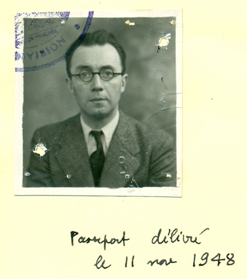

Jules CHAUVET est né le 6 Août 1907 à la Chapelle de Guinchay dans le Beaujolais. Son arrière-grand-père Philippe VOLLUET, natif lui-même de La Chapelle de Guinchay (1826), avait fondé en 1850 le commerce de vins.

Etudes secondaires au Lycée Lamartine de Mâcon. Service militaire dans l’artillerie à Dijon ; il assiste ensuite son père Philippe CHAUVET dans la maison familiale “CHAUVET Frères”. Il cumule cette activité avec la poursuite de ses études au laboratoire de l’Institut de chimie biologique de l’université de Lyon.
Cette double activité est interrompue en 1939 par sa mobilisation ; fait prisonnier en juin 1940, il parvient à s’évader en septembre. Son père et son oncle (les associés de « Chauvet Frères ») disparaissent successivement en 1942 et en 1943. Il devient alors le gestionnaire du commerce familial ; toutefois il restera fidèle à l’Institut de chimie biologique de Lyon, où il a été actif jusqu’en 1947.
Durant un demi-siècle, il a dirigé non seulement le commerce du vin mais aussi le domaine familial agricole et viticole (6 ha de beaujolais-villages), ce qui lui a permis de ne pas se limiter à des recherches en laboratoire, mais aussi d’effectuer ses expériences de vinification “grandeur nature”; le “cuvage Jules CHAUVET” était devenu célèbre dans le monde scientifique du vin.
De 1962 à 1988, il a formé plus de quarante stagiaires. Il fut un Maître au sens littéral, Maître à penser le vin, à vinifier et à déguster.
En 1989, le 16 Juin, il s’éteint dans la maison qui a connu le cycle de sa vie.
« Le beaujolais, c’est la nature avec ses parfums, sa lumière, ses infinis, le repos du soir, l’enthousiasme du matin. »
Jules Chauvet
L’œuvre scientifique de Jules Chauvet peut se classer dans trois domaines principaux :
9 communications publiées dans Enzymiologia, Biochemica, Sciences des aliments ou présentées dans des colloques INRA, ITV.
Les thématiques sont notamment :
24 communications publiées dans le bulletin de l’OIV, Vigne et Vin, les CR Académie d’Agriculture ou présentées au Symposium d’œnologie de Bordeaux et lors des journées techniques des œnologues de l’ITV et de l’INRA.
Les thématiques sont notamment :
8 communications publiées dans les cahiers techniques de l’INAO ou présentées au colloque de l’IFV à Dijon, à la foire de Mâcon…
« Chauvet, notre initiateur à l’analyse olfactive » Emile PeynaudJules Chauvet, dégustateur hors pair, nous a laissé de très nombreuses et très remarquables notes de dégustation.
Premier titre de la “Collection Jules Chauvet” réalisée en coédition par Les éditions de l’épure et Marie Rocher. Le vin en question, bilingue français/anglais sera disponible en librairie le 12 avril 2018 mais déjà en précommande sur le site des éditions de l’épure :
L'Association loi de 1901, L’Amicale Jules Chauvet, fut crée en 1990 après son décès, à l'initiative de Raymond Rivoire (ancien directeur du laboratoire d'oenologie de Mâcon.) et André Lardon (Directeur de la Maison des vins de Mâcon).
Elle a pour vocation de pérenniser la mémoire et l'oeuvre de Jules Chauvet.
A la suite de Raymond Rivoire, Lucien Chauvet, le frère de Jules, fut président de nombreuses années jusqu'en 2014.
L'Amicale est aujourd'hui présidée par Dominique Joseph et deux des nièces de Jules Chauvet (Aline et Bénédicte) sont membres du bureau.
Actuellement elle compte une cinquantaine d'adhérents ainsi que le soutien de la Mairie de la Chapelle de Guinchay.
Si vous voulez adhérer à l’Amicale Jules Chauvet, merci de nous envoyer un mail via la rubrique Contact
La famille Chauvet a déposé toutes les archives de Jules Chauvet ainsi que celles de la Maison de Vin Chauvet Frères et Cie aux Archives départementales de Mâcon.
L'adresse mail de l'amicale : amicalejuleschauvet(at)gmail(dot)com
Le 12 Avril 2018, parution aux éditions de l'épure du livre le vin en question
Les 15 et 16 Avril prochains le salon Bien Boire en Beaujolais